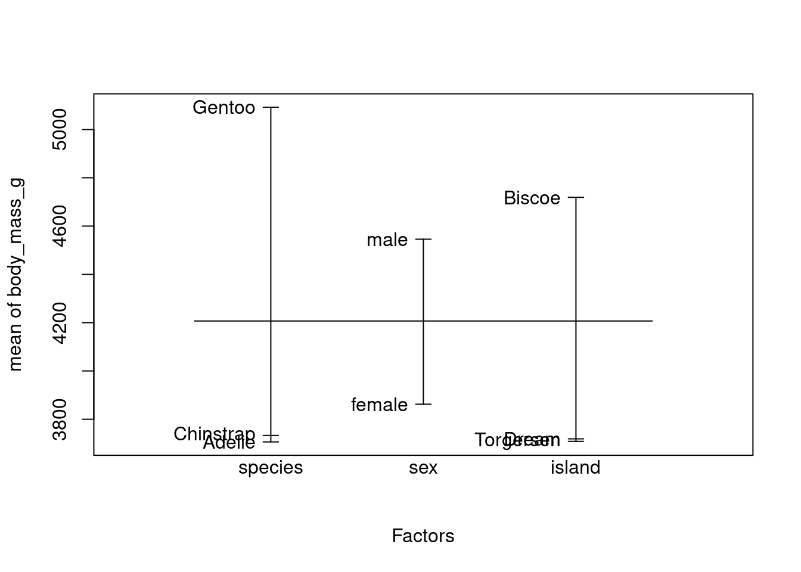
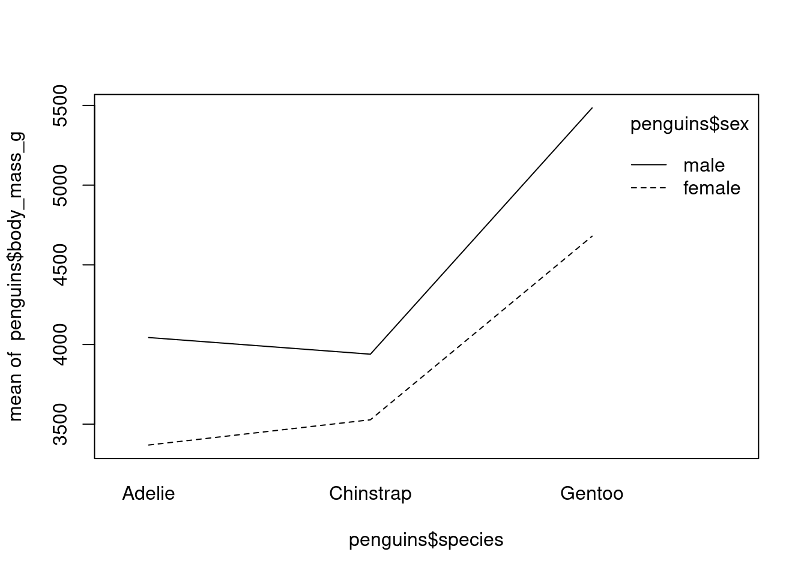
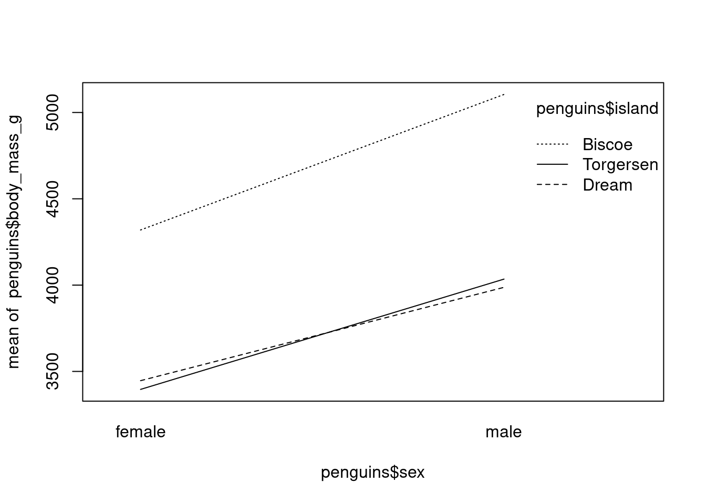
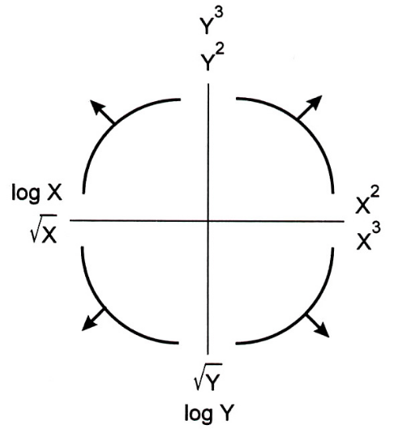

boxplot(penguins$body_mass_g, xlab="Masse (g)")
La phase initiale de l’analyse des données implique une exploration graphique de l’ensemble des données en répondant aux questions suivantes :
En explorant systématiquement ces questions, nous pouvons acquérir une compréhension globale des caractéristiques de l’ensemble de données et guider l’orientation des analyses ultérieures.
Un diagramme en boîte, ou boîte à moustaches, permet de visualiser la moyenne et la dispersion d’une variable univariée. Normalement, le point central d’un diagramme en boîte est la médiane, mais il peut également s’agir de la moyenne. Les quartiles 25% et 75% (Q25 et Q75) définissent les charnières (extrémités des boîtes), et la différence entre les charnières est appelée l’écart. Des lignes (ou moustaches) sont tracées à partir de chaque charnière jusqu’à 1,5 fois l’écart ou jusqu’à la valeur la plus extrême de l’écart, la plus petite étant retenue. Tous les points situés en dehors de ces valeurs sont normalement identifiés comme des valeurs aberrantes Figure 3.1.

La syntaxe générale pour créer la boîte à moustache d’une variable en utilisant base R est: boxplot(variable).
L’aide complète de la fonction boxplot() est obtenue par la commande ?boxplot().
Etudions la variable body_mass_g en représentant sa boîte à moustache.
boxplot(penguins$body_mass_g, xlab="Masse (g)")
On remarque qu’aucune valeur aberrante n’apparait de façon visible. De plus on observe que la médiane du poids des manchots se situent autour de 4000 g (on peut facilement confirmer cela en calculant la médiane median(penguins$body_mass_g)).
On peut alors être amenée à continuer l’exploration en étudiant le poids, cette fois-ci en étudiant la variable par espèce de manchot.
boxplot(body_mass_g ~ species, data=penguins, ylab="Masse (g)", xlab=NULL)
Les boîte à moustaches representées nous permettent de nous rendre compte que l’espèce Gentoo a sensiblement une masse plus élevée que les deux autres. On pourra confirmer si cette différence est significative avec une analyse de variance. De plus, on observe la présence de quelques valeurs aberrantes chez l’espèce Chinstrap.
Les diagrammes de points de Cleveland sont utiles pour identifier les valeurs aberrantes et l’homogénéité.
L’homogénéité signifie que la variance des données ne change pas le long des gradients. La violation de cette condition est appelée hétérogénéité et l’homogénéité est une hypothèse cruciale pour de nombreuses méthodes statistiques.
La valeur est présentée sur l’axe horizontal et l’ordre des points (tel qu’il est organisé par le programme) est présenté sur l’axe vertical.
La syntaxe pour générer un diagramme de points de Cleveland avec base R est dotchart(variable). L’aide est disponible avec la commande ?dotchart().
Representons le diagramme de point de Cleveland avec pour but d’identifier une possible violation de l’homogénéité ou la présence de valeurs aberrantes. Le diagrammes à points est réalisé en utilisant différents symboles conditionnels à une variable explicative nominale qui est ici l’espèce.
dotchart(penguins$body_mass_g, main="Masse (g)", pch=as.numeric(penguins$species))
Tout point isolé à droite ou à gauche indique des valeurs aberrantes, mais dans cet jeu de données, en considérant l’ensemble du graphique aucun point n’est considéré comme aberrant, ce qui confirme notre observation de la boîte à moustache. Cependant comme observé plus haut, en prenant les points par groupe (chaque symbole représentant une espèce différente) on observe bien un groupe présentant des valeurs aberrantes.
bill_depth_mm, bill_length_mm et flipper_length_mm à l’aide de boîte à moustaches et de diagrammes en points de Cleveland.Un histogramme montre le centre et la distribution des données et donne une indication de la normalité. Toutefois, l’application d’une transformation des données pour les faire correspondre à une distribution normale nécessite des précautions.
# Subdivision du panel graphique
layout(matrix(c(1, 2, 1, 3), nrow = 2, byrow = TRUE))
# Histrogramme de la masse pour l'ensemble des manchots
hist(penguins$body_mass_g, main="Masse (g)", xlab=NULL)
# Histrogramme de la masse pour les males
hist(penguins$body_mass_g[penguins$sex=="male"], main="Males", xlab=NULL)
# Histrogramme de la masse pour les femelles
hist(penguins$body_mass_g[penguins$sex=="female"], main="Females", xlab=NULL)
La forme de l’histogramme montre une certaine asymétrie et l’on pourrait être tenté d’appliquer une transformation. Cependant, un histogramme conditionnel donne une image assez différente. Dans un histogramme conditionnel, les données sont divisées en fonction d’une variable nominale et les histogrammes des sous-ensembles sont tracés côte-à-côte. A ce moment on obtient une figure tout autre montrant une bimodalité aussi bien chez les males que chez les femelles manchots. On a une différence claire du centre de la distribution et la pic initial de données observé sur le premier histogramme est grandement du aux femelles. Il faudrait donc explorer les effets du sexe sur le poids des manchots ainsi que les interactions avant d’envisager une transformation des données.
Un graphique Quantile-Quantile (QQ-plots) est un outil graphique utilisé pour déterminer si les données suivent une distribution particulière. Le graphique QQ pour une distribution normale compare la distribution d’une variable donnée à la distribution gaussienne. Si les points obtenus se situent approximativement sur une ligne droite, on considère que la distribution des données est la même que celle d’une variable normalement distribuée.
Le \(p\)-ème quantile \(q\) d’une variable aléatoire \(y\) est donnée par \(F(q) = P(y \leq q) = p\). Si l’on souhaire savoir quelle valeur de \(q\) appartient à \(p\), on inverse la formule précédente pour obtenir \(q = F^{-1}(p)\). Supposons que nous avons cinq observations \(Y_i\) avec les valeurs 1, 2, 3, 4, 5. Par définition, le premier chiffre est le 0% percentile, le milieu est le 50% percentile et 5 est le 100% percentile. La différence entre un quantile et un percentile est un seulement le facteur 100. Les QQ-plots sont soit basés sur les percentiles ou typiquement sur les points quantiles de l’échantillon définis par \((i-0.5)/n\) où \(i\) varie de 1 à 5 et \(n=5\) dans notre example. Ainsi pour notre exemple, les points de quantiles de l’échantillon sont 0,1, 0,3, 0,5, 0,7 et 0,9. Ce sont les valeurs de \(p\) pour l’échantillon. Dans la séconde étape, ces quantiles de l’échantillon sont comparés à une distribution normale. Celà signifie que la fonction de densité \(P(y\leq q)\) est désormais une fonction de densité normale et \(F()\) est désormais la fonction de répartition de la loi normale.
Le QQ-plot est donc un graphique des valeurs de \(Y_i\) de l’échantillon comparés aux \(q_i\). On peut ajouter à ce graphique dans R, une ligne qui connecte les 25e et le 75e quartiles.
Nous appliquons dans le même temps une transformation des données pour visualiser laquelle produit le meilleur ajustement.
Il est très souvent utilse de combiner les QQ-plots avec des transformations de puissance, qui est donnée par \[ \frac{Y^p - 1}{p}, \forall p \neq 0; log(Y) , p = 0\]
Veuillez noter que le \(p\) utilisé ici n’est pas le \(p\) utilisé pour décrire les quantiles. Il est aussi utile de comparer plusieurs QQ-plots pour différentes valeurs de \(p\).
# Transformation racine carrée
bmsq <- sqrt(penguins$body_mass_g)
# Transformation racine quatrième
bmfq <- penguins$body_mass_g^(0.25)
# Transformation logarithmique
bmlog <- log(penguins$body_mass_g)Dans le graphique ci-dessous, aucune transormation semble prendre le dessus sur l’autre.
layout(matrix(c(1, 2, 3, 4), nrow = 2, byrow = TRUE))
qqnorm(penguins$body_mass_g, main="Aucune transformation (p=0)")
qqline(penguins$body_mass_g)
qqnorm(bmsq, main="Racine carré (p=0.5)")
qqline(bmsq)
qqnorm(bmfq, main="Racine quatrième (p=0.25)")
qqline(bmfq)
qqnorm(bmlog, main="Logarithme (p=1)")
qqline(bmlog)
bill_depth_mm, bill_length_mm et flipper_length_mm à l’aide d’histogrammes et de diagramme en points de Cleveland.Jusqu’à présent, l’accent a été mis sur la détection des valeurs aberrantes, la vérification de la normalité et l’exploration d’ensembles de données associés à des variables explicatives nominales uniques. Les techniques suivantes s’intéressent aux relations entre plusieurs variables. Un nuage de points est un outil permettant de trouver une relation entre deux variables. Il représente une variable sur l’axe horizontal et une seconde variable sur l’axe vertical. Pour aider à visualiser la relation entre les variables, une ligne droite ou une courbe de lissage est souvent ajoutée au graphique.
La figure suivante montre le nuage de points entre les variables flipper_length_mm (taille de la nageoire) et body_mass_g (masse du manchot).
plot(penguins$flipper_length_mm, penguins$body_mass_g, xlab="Taille des nageoires", ylab="Masse (g)")
m1 <- lm(body_mass_g ~ flipper_length_mm, data=penguins)
abline(m1)
Si vous avez plus de deux variables, vous pouvez produire une série de nuage de points : un pour chaque paire de variables. Cependant, le nombre de diagrammes augmente rapidement si vous avez plus de trois variables à explorer. Une meilleure approche, jusqu’à environ 10 variables explicatives, est le diagramme de paires encore appelée matrice de nuage de points. Ces diagrammes présentent plusieurs nuage de points par paire dans un seul graphique et peuvent être utilisés pour détecter les relations entre les variables et pour détecter la colinéarité.
La figure suivante montre un pairplot entre les variables body_mass_g, flipper_length_mm, bill_length_mm et bill_depth_mm. Chaque sous-graphique est un nuage de points entre deux variables, avec les etiquettes de chaque variable ajoutée dans la diagonale.
# penguins[3:6] sélectionne les variables bill_length_mm
# bill_depth_mm, flipper_length_mm, body_mass_g
pairs(penguins[,3:6])
Il est aussi possible d’ajouter une droite ajustée à chaque graphique.
pairs(penguins[,3:6], panel=panel.smooth)
On parle de colinéarité lorsqu’il existe une forte corrélation entre deux (ou plus) variables.
La figure ci-dessous montre un autre pairplot du même jeu de donnée sur lequel nous avons, cette fois-ci ajouté les coefficients de corrélation entre les variables dans le triangle bas du pairplot.
Pour cela, nous utiliserons une fonction panel.cor définie comme suit:
panel.cor <- function(x, y, digits=1, prefix="", cex.cor) {
usr <- par("usr")
on.exit(par(usr))
par(usr=c(0, 1, 0, 1))
r1 <- cor(x, y, use="pairwise.complete.obs")
r <- abs(cor(x, y, use="pairwise.complete.obs"))
txt <- format(c(r1, 0.123456789), digits=digits)[1]
txt <- paste(prefix, txt, sep="")
if (missing(cex.cor)) {
cex <- 0.9/strwidth(txt)
}
text(0.5, 0.5, txt, cex = cex * r)
}Par la suite le diagramme est construit en faisant:
pairs(penguins[,3:6], lower.panel=panel.cor)
Il faut noter qu’il existe une forte colinéarité entre la taille de la nageoire et la masse du manchot.
Des diagrammes en paires doivent être établis pour chaque analyse. Ils doivent comprendre (i) un diagramme par paire de toutes les variables de réponse (en supposant que plus d’une variable de réponse soit disponible) ; (ii) un diagramme par paire de toutes les variables explicatives ; et (iii) un diagramme par paire de toutes les variables de réponse et de toutes les variables explicatives.
Le premier graphique (i) fournit des informations qui aideront à choisir les techniques multivariées les plus appropriées. On espère que les variables de réponse présenteront de fortes relations linéaires (certaines techniques telles que l’ACP dépendent de relations linéaires). Toutefois, si le graphique (ii) montre une relation linéaire claire entre les variables explicatives, indiquant une colinéarité, nous savons que nous avons un problème majeur à résoudre avant de poursuivre l’analyse.
Le graphique (iii) permet de déterminer si les relations entre les variables de réponse et les variables explicatives sont linéaires. Si ce n’est pas le cas, plusieurs options s’offrent à nous. La plus simple consiste à appliquer une transformation aux variables de réponse et/ou explicatives afin de linéariser les relations.
D’autres options seront explorée le long du séminaire.
Un coplot est un nuage de points conditionnel montrant la relation entre y et x, pour différentes valeurs d’une troisième variable z, voire d’une quatrième variable w. Les variables conditionnelles peuvent être nominales ou continues.
La figure suivante présente un coplot entre la masse des manchots et la taille de leur nageoire conditionée par la variable nominale espèce.
Les panneaux sont classés de la partie inférieure gauche à la partie supérieure droite. Cet ordre correspond à des valeurs croissantes de la variable explicative du conditionnement.
coplot(body_mass_g ~ flipper_length_mm | species, data = penguins)
Missing rows: 4, 272 body_mass_g vs bill_depth_mm et body_mass_g vs bill_length_mm à l’aide de nauge de points et de coplot.Les diagrammes de conception et d’interaction sont un autre outil précieux pour explorer les ensembles de données avec des variables nominales et sont particulièrement utiles à utiliser avant d’appliquer la régression, la GLM, la modélisation mixte ou l’analyse de variance.
Ils permettent de visualiser (i) les différences entre les valeurs moyennes de la variable réponse pour différents niveaux de variables nominales et (ii) les interactions entre les variables explicatives.
La figure suivante montre un diagramme de conception entre la masse des manchots et les trois variables nominale du jeu de données: species, sex et island. Il nous permet de comparer directement les moyennes (ou médianes) de chaque variable nominale en utilisant un seul graphique.
Le graphique nous montre que la masse moyenne de l’espèce Gentoo est située autour de 5100g et est sensiblement plus élevée que celle de Chinstrap et Adélie. De même on peut aussi remarquer que la masse moyenne des mâles est plus grande que celle des femelles.
plot.design(body_mass_g ~ species + sex + island, data = penguins)
Cependant, les diagrammes de conception ne nous permettent pas d’explorer les interactions entre les variables explicatives, d’où la nécessité d’utiliser les diagrammes d’interactions.
Interprétation d’un diagramme d’interaction
Identifier les facteurs et les niveaux: observez l’abscisse pour identifier les niveaux du premier facteur et l’ordonnée pour identifier les niveaux du deuxième facteur.
Évaluer le parallélisme des lignes: si les lignes sont parallèles, cela signifie qu’il n’y a pas d’interaction entre les facteurs; l’effet d’un facteur est constant pour tous les niveaux de l’autre facteur. Cependant, si les lignes ne sont pas parallèles (c’est-à-dire qu’elles se croisent ou divergent), cela indique une interaction entre les facteurs. L’effet d’un facteur dépend alors du niveau de l’autre facteur.
Ampleur de l’interaction: le degré de divergence ou de convergence des lignes peut donner une indication de la force de l’interaction. Une divergence ou une convergence plus importante indique un effet d’interaction plus fort.
Direction des effets: observez si la variable de réponse augmente ou diminue avec les changements de niveau des facteurs. Cela peut aider à déterminer la nature de l’interaction et des effets principaux.
Pour résumer
Pas d’interaction: les lignes parallèles suggèrent que les deux facteurs n’interagissent pas. Les effets principaux de chaque facteur sont additifs.
Interaction présente: les lignes non parallèles indiquent une interaction entre les facteurs, ce qui signifie que l’effet d’un facteur dépend du niveau de l’autre facteur.
Force et direction: le degré de divergence ou de convergence et la direction des lignes donnent des indications sur la force et la nature de l’interaction.
Le premier diagrame d’interaction ci-dessous montre l’interaction entre l’espèce et le sexe. On observe qu’il n’y a une interaction entre le sexe et la masse des manchots, ce qui signifie que la masse dépend du sexe et de l’espèce de manchot.
interaction.plot(penguins$species, penguins$sex, penguins$body_mass_g)
Le second diagramme montre l’interaction entre l’île (l’habitat du manchot), le sexe et la masse. On observe qu’il existe aussi une interaction entre ces variables.
interaction.plot(penguins$sex, penguins$island, penguins$body_mass_g)
sex, species et flipper_length_mm ? Explorez de même le type d’interaction entre sex, species et bill_length_mm.Une valeur aberrante est un point de données qui, en raison de sa valeur extrême par rapport au reste de l’ensemble de données, peut influencer incorrectement une analyse. La première question qui se pose est donc la suivante: “Comment identifier une valeur aberrante?” Une approche simple pourrait consister à quantifier tout ce qui est aberrant au-delà d’une certaine distance par rapport au centre des données. On pourrait par exemple considérer les points situés en dehors des charnières d’un diagramme en boîte comme des valeurs aberrantes. Cependant, si la quantité des données n’est pas suffisante, il pourrait être difficile de considérer ces valeurs comme abberantes.
Les nuages de points peuvent aussi nous permettre d’identifier les valeurs aberrantes. Ainsi, même si une observation n’est pas considérée comme aberrante dans l’espace x ou dans l’espace y (alors possiblement identifiée par une boîte à moustache), elle peut l’être dans l’espace xy. La situation dans laquelle une observation est une valeur aberrante dans l’espace x, ainsi que dans l’espace y, mais pas dans l’espace xy, est également possible.
Pour résumer la détection des valeurs aberrantes peut rapidemment devenir difficile, cependant l’analyse pourrait permettre d’y voir plus clair.
Il existe de nombreuses raisons de transformer les données, mais c’est généralement parce que les données présentent des valeurs aberrantes et des distributions non normales. La transformation des données (sur les variables de réponse) sera également nécessaire lorsque vous prévoyez d’utiliser l’analyse discriminante et qu’il existe des preuves évidentes (par exemple, en utilisant un diagramme en pointillés de Cleveland) d’hétérogénéité.
De plus, le choix de la transformation est influencée par le choix de l’analyse de suivi. Pour certaines techniques, telles que les arbres de classification ou de régression, la transformation des variables explicatives ne change rien aux résultats. Cependant, la plupart des techniques peuvent nécessiter une certaine transformation des données brutes avant l’analyse.
Le problème le plus facile à résoudre est celui où les observations extrêmes identifiées au cours de l’étape d’exploration des données s’avèrent être des erreurs de frappe. Nous supposerons toutefois que cette solution facile n’existe pas et que nous disposons d’un ensemble de données contenant de véritables observations extrêmes. Si ces observations extrêmes se trouvent dans les variables explicatives, une transformation des variables explicatives (continues) est certainement nécessaire, en particulier si l’on applique des techniques de régression, d’analyse de la covariance, de GLM, de GAM ou des techniques multivariées telles que l’analyse de la redondance et l’analyse canonique des correspondances.
Lorsque les observations extrêmes se trouvent dans la variable réponse, plusieurs approches sont possibles. Vous pouvez soit transformer les données, soit appliquer une technique légèrement plus performante pour traiter les valeurs extrêmes, comme un GLM ou un GAM avec une distribution de Poisson. Cette dernière méthode ne fonctionne que s’il y a une augmentation de la dispersion des données observées pour des valeurs plus élevées. Il est également possible d’utiliser des modèles de quasi-Poisson si les données sont trop dispersées.
Vous ne devez jamais appliquer une racine carrée ou une transformation logarithmique à la variable réponse, puis continuer avec un modèle GLM de Poisson, car cela applique la correction deux fois.
Une solution plus radicale pour les observations extrêmes consiste à les omettre purement et simplement de l’analyse. Toutefois, si vous adoptez cette approche, vous devez toujours fournir les résultats de l’analyse avec et sans les observations extrêmes. Si les grandes valeurs proviennent toutes d’une région, d’un mois ou d’un sexe, il est possible d’utiliser différentes composantes de variance dans le modèle de régression linéaire, ce qui permet d’obtenir des moindres carrés généralisés (GLS).
Supossons par exemple que nous souhaitons faire une regression linéaire. Le diagramme de points de Cleveland ou les boîtes à moustaches nous indiquent qu’il n’y a pas de valeurs aberrantes préoccupantes, mais le nuage de points d’une variable réponse et d’une variable explicative montre une relation non linéaire évidente. Dans ce cas, nous devrions envisager de transformer l’une des variables ou les deux. Mais quelle transformation utiliser ? L’éventail des transformations possibles pour les variables réponse et explicative peut être choisi parmi les suivantes \[ y^{\frac{1}{4}}, y^{\frac{1}{3}}, y^{\frac{1}{2}}, y, log(y), y^2, y^3, y^4, ..\]
Ces transformations sont des cas particulier de la transformation de puissance de Box-Cox qui est une famille de transformation qui ne peuvent être appliquée que sur les données non-négatives.
Une autre alternative est d’utiliser la transformation en rang (méthode utilisée par la plupart des méthodes non paramétrique) ou la transformation en données binaires. Par exemple, en supposant que l’on a la série statistique suivante 2, 7, 4, 9, 22, 40, la transformation en rang va donner 1, 3, 2, 4, 5, 6. Si l’on a la série statistique 0, 1, 3, 0, 4, 0, 100 alors la transformation en série binaire va donner 0, 1, 1, 0, 1, 0, 1.
Il existe plusieurs stratégies pour le choix de la transformation la plus appropriée. Nous présentons ici deux d’entre elles: essai-erreur et la règle de Mosteller-Tukey.
La transformation par essai-erreur est le fait de tester différentes transformation et de visualiser les résultats à l’aide des outils graphiques présentés ci-dessus afin d’effectuer la sélection de la meilleure transformation. En utilisant cette méthode, il es important de reporter les résultats incluant aussi bien les transformations réussies que celles qui ont échouées.
Lorsque l’analyse qui suivra nécessite des relations linéaire entre les variables, la règle de Mosteller-Tukey Figure 3.2 qui appartient à la famille des transformations de Box-Cox.

Cette approche est basée sur l’identification des motifs non-linéaires par l’inspection des nuages de points. Les transformations requises peuvent alors être inférée du graphique Figure 3.2.
Par exemple, si la forme du nuage de points est similaire à la forme du quadrant en bas à gauche de la figure Figure 3.2, alors soit if faudra effectuer une transformation \(x^2\) ou \(x^3\) de la variable explicative ou effectuer une transformation \(log(y)\) ou \(y^{0.5}\) de la variable réponse.
Si les variables comparées proviennent d’échelles très différentes, comme la comparaison des taux de croissance de petites espèces de poissons avec ceux de grandes espèces de poissons, la standardisation (conversion de toutes les variables à la même échelle) peut être une option. Toutefois, cela dépend de la technique statistique utilisée. Il existe plusieurs méthodes pour convertir les données à la même échelle, et une option consiste à centrer toutes les variables autour de zéro par \[ Y_i^{new} = Y_i - \bar{Y} \] où \(\bar{Y}\) est la moyenne de l’échantillon et \(Y_i\) est la valeur de la i-ème observation. Cependant la standardisation la plus utilisée est donnée par \[ Y_i^{new} = (Y_i - \bar{Y}) / s_y \] où \(s_y\) est l’écart type de l’échanitllon. Les valeurs obtenues sont alors centrées autour de zéro, avec une variance de 1, et sont sans unités. Cette transformation est aussi appelée normalisation.
Comme pour les autres transformations, la décision de standardiser vos données dépend de la technique statistique que vous envisagez d’utiliser. Par exemple, si vous souhaitez comparer des paramètres de régression, vous pouvez juger utile de normaliser les variables explicatives avant l’analyse, en particulier si elles sont exprimées dans des unités différentes ou si elles ont des intervalles différents. Certaines techniques, telles que l’analyse en composantes principales, normalisent ou centrent automatiquement les variables.
Même si les nuages de points suggèrent l’absence de relation entre Y et X, cela ne signifie pas nécessairement qu’il n’en existe pas. Un nuage de points ne montre que la relation entre deux variables, et l’inclusion d’une troisième, d’une quatrième ou même d’une cinquième variable peut conduire à une conclusion différente.
Une fois l’exploration des données terminée, l’étape suivante consiste à vérifier et à étudier les modèles et les relations que cette étape a permis d’identifier. Si le nuage de points indique une relation linéaire entre les variables, la régression linéaire est l’étape suivante évidente. Toutefois, si le nuage de points suggère un modèle non linéaire clair, une approche différente doit être adoptée, qui peut inclure (i) l’utilisation d’interactions et/ou de termes quadratiques dans le modèle de régression linéaire, (ii) la transformation des données, (iii) la poursuite avec un modèle de régression non linéaire, (iii) l’utilisation d’une modélisation linéaire généralisée, (iv) l’application de techniques de modélisation additive généralisée, ou (v) l’application de techniques de modélisation mixtes (additives). Toutes ces approches sont étudiées dans les chapitres suivants. La première option consiste à utiliser le modèle de régression linéaire, mais il faut s’assurer que toutes les hypothèses sont respectées. Pour choisir l’approche la plus appropriée, il faut connaître les hypothèses des méthodes sélectionnées et disposer d’outils permettant de détecter les violations (à l’aide des résidus). Tous ces éléments sont abordés dans les chapitres suivants, mais tout se résume à quelque chose de très fondamental : apprenez de vos erreurs.